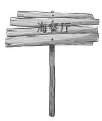

Finding Uncle Max
第二天一大早，奥登家的孩子吃早餐时，小杰和塞米正在自家的院子里东奔西跑。
“祝你们好运，孩子们，”奥登先生边说边动身上车，“希望那两个男孩可以和你们来一次自行车之旅。”
“嗯，他们看起来很开心，”班尼说道，“我敢打赌，他们一定被批准可以去了。”
果不其然，当海家兄弟看到奥登家的朋友走过来时，简直兴奋到了极点。他们迫不及待告诉对方好消息。“哈哈，我们可以一起骑自行车去了！”小杰高兴地尖声叫道，“妈妈居然也同意啦，这太让我们吃惊了！还有，我们不用赶回来吃午饭，可以就在马克斯叔叔的餐厅里吃。”
“我们每个人还得到了一美元的餐费呢！”塞米高兴地说。
“太好啦，”杰西说道，“我们回去取自行车吧！”
就这样，奥登家的孩子回家去取车，同时告诉麦格雷戈太太，他们不回家吃午饭了。
“我们要在一家小餐馆里吃，就是靠近海滨路的那个。”杰西说道。
麦格雷戈太太点点头，说：“我真为那两个小家伙高兴，这次终于可以走出后院，有机会出去锻炼一下了。”
“是呀，”杰西表示赞同，“对于孩子们喜欢做什么，海家爸妈并没有考虑太多。我感觉到，他们只希望小杰和塞米尽可能少惹麻烦就好。”
“他们不想被人打扰，”麦格雷戈太太同意这个说法，“这一点很容易看出来。”
不一会儿，六辆自行车便上路了。班尼紧挨着塞米，和他聊起天来。“塞米，”他说，“快告诉我，你为什么那么想要望远镜？”
“每座树屋都应该配有一副望远镜啊！”塞米回答，“要留意敌人，还要监视树林里所有的移动目标。”
“有道理，不过大多数人都是先有了树屋，然后再配望远镜，”班尼说道，“可你们俩还不等树屋造好就想要，这是为什么？”
“因为马克斯叔叔和爸爸曾经有过啊，你知道的。”塞米回答道，“而且我们有可能会找得到它！”

班尼反复思考着塞米的回答，觉得这个理由没有什么说服力。不过眼下其他人一路骑车，已经到了海滨路，班尼和塞米也就立刻追了过去。
沿着乡村小路骑自行车是件舒心的事。周围没有山峦，道路畅通而平坦。天气不太热，咸咸的海风迎面吹来。六个小伙伴配合默契，轮番骑在最前面引路。
就这样，骑了差不多一个小时后，最前面的班尼突然停了下来，他倏地调转车头，哀怨地说：“如果再不吃东西的话，我就不骑了。”
维莉笑道：“班尼，很高兴听你这样说，因为我也饿坏了。”
小杰说道：“反正我也累了。我们快到马克斯叔叔的餐厅了吗？”
“是啊，就快到了。”亨利回答说，“我以前曾开车经过那儿，不过从没停下来吃过饭。拐过这个弯应该就到了。”
班尼说道：“哦，那我还可以撑一会儿。”说完，他们骑车拐过了那个弯。
“小杰，我们到啦。看，海餐厅。”亨利指着一块旧招牌说。招牌已经破得不成样子，很难辨认出上面的字。

四个男孩和两个女孩在楼梯旁将车停好。
“我和塞米从没见过这儿。”小杰说道，“马克斯叔叔一定很老了，他比爸爸年龄大得多，真希望他能记起我们。”
“不必担心，”班尼说道，“尽管告诉他，他会相信你们的。万一他不相信，我们就出面。”
一行人走进餐厅，餐厅里昏昏暗暗，空空荡荡的，唯一迎接他们的，是一股烤汉堡的香味。
这时，一名男子从餐厅背面的房间里走了出来，他看起来毫无老态，十分活泼强壮而且精力充沛。他有着卷曲的灰白头发，明亮的蓝色眼睛。他微笑地看着小客人们，问道：“你们想来点三明治、热狗还是汉堡呢？”
没有人回应。塞米走向柜台，抬头望着这个男人。
“你是马克斯叔叔吗？”他问道，“我是塞米。”
“天哪！”马克斯·海说道，“你真的是塞米？我上次见你时，你还是被我抱在怀里的小宝宝呐！你哥哥呢？”
“我在这儿，”小杰说道，“这么说，我们来过这里？”
“当然，小杰，你们来过。不过当时你们还太小，肯定不记得啦。对了，你们的爸爸还好吗？妈妈呢？”
“他们都很忙，”塞米回答说，“不过，爸爸说他很快就会来看你。”
“希望如此，”海先生回答道，“我知道，他现在可是个举足轻重的科学家了，恐怕没多少时间来看我。”
“不会的！”塞米说道，“不过他也没太多时间陪我们玩。这几个是我们的邻居——奥登兄妹，大部分时候都是他们陪着我们。”
奥登家的孩子朝海先生笑了笑。
班尼说道：“陪他们玩好开心的！我们正在一起搭建树屋呢！”
“树屋？”马克斯叔叔不禁扬声说道，“真有意思！你们是在那棵大白橡树上建的吗？”
“是啊！”班尼回答道，“您是怎么猜到的？”

“不急不急，待会儿再说这个问题。你们看起来似乎很饿了，要不先吃点东西填填肚子吧？”
维莉开心地笑道：“好啊好啊，我们都饿坏啦。我想要个汉堡，超级巨型的那种！”
“我们都要这个，”杰西回答说，“每人再来一杯牛奶。”
“等我一会儿。”马克斯叔叔说，“食物都是现成的，马上端过来。”
小客人们环顾了一下四周，昏暗的餐厅里，只有一大两小的桌子和配套的椅子，再就是柜台旁有些高脚凳，于是他们坐了上去。
不一会儿，海先生端着一个托盘走了过来。他将六碟汉堡放到柜台上，紧接着又倒了六杯牛奶。之后，他在柜台对面坐了下来。
小杰边狼吞虎咽边说：“马克斯叔叔，你给我们的远不止是汉堡，完全是大餐啊，有法式炸薯条、生菜、番茄、沙拉酱还有泡菜！”
“是呀，”马克斯叔叔点点头，“看大家吃得香，我就开心。现在，可以告诉我关于树屋的事了吧？”
“海先生，我们的工作两天前就开始了，”亨利说道，“这两个小家伙刚刚搭完地板。”
“就管我叫马克斯叔叔吧！我敢打赌，你们是来寻找之前那个丢失的望远镜的。”
马克斯叔叔笑了起来，孩子们见状也笑了。“就为了这么件小破事儿啊！”他说，“我猜，你们的爸爸早就忘了。”
“不，他才没忘呢！”塞米回答说，“他一直认为望远镜是你拿的。”
“我没拿，也不知道它在哪儿。”马克斯叔叔说，“我猜，你们是为着树屋，才想要望远镜的吧？”

“对啊，想要极了，”塞米喝了口牛奶，“望远镜是树屋的标配呀。”
“确实如此，”马克斯叔叔表示赞同，“说一些你们不知道的事吧，我和你们的爸爸也曾在那棵大白橡树上建造过树屋呐！”
“真的吗？”班尼激动地尖叫起来，“还没人告诉我们这些呢！”
“是呀，爸爸从来没和我们说过，”小杰说道，“我也不知道为什么，我猜也许是他太忙了，他总是在工作。”
“可惜的是，后来我们搬走了，树屋没保存多久。”马克斯叔叔继续讲述道，“不过那可真是座令人心潮澎湃的树屋啊！望远镜就是在那儿用过的，它很精致，我们都很爱惜，总是用一个沉沉的皮箱子装着它，一用完就马上放回去。”
“树屋是您和海先生两个人搭建的吗？”班尼问道。
“差不多吧。不过当时建屋顶的时候遇到了点麻烦，我们个子不够高，幸好有位先生帮了我们好多次，他是你们家以前房主的客人。”
“会不会是他拿走了望远镜？”小杰问道。
“哦，当然不会！他连一分钱都不会偷拿，这点我很确信。他待的时间不长，一个月后就离开了，之后我们再也没见过他。”
亨利看了看马克斯叔叔，问道：“您是在受他帮助之后，才发现望远镜不见了吗？”
尽管马克斯叔叔极不情愿回答这个问题，他还是说：“对，不得不承认，就在他离开的那天，我们发现望远镜不见了。不过，我敢保证不是他偷的，因为他自己就有一副望远镜。”
维莉解释道：“亨利不是这个意思，他是说，那位先生很可能把望远镜放到别的地方去了。”
“也许吧，总之我们再也没有见过它。”马克斯叔叔说，“那位先生在屋顶上开了个天窗洞，这样一来，我们就能躺在树屋里看星星了。”
“这个主意太棒啦，”塞米激动地说，“班尼，我们也要这样做，好吗？”
“好的，少爷，”班尼说，“就算我们没有望远镜，也要在屋顶上凿个洞！”
小杰陷入了沉思，他望着叔叔，问道：“望远镜的事，是您和爸爸合不来的原因之一吗？”
“是的，有这个因素。还有就是，我非常不喜欢上学，可你爸一直是学霸，当时正好在打仗，于是我去参军，你爸就去上了大学，之后好多年我们都没有再见面。战争结束后，我一直到处漂泊，最后才落叶归根，买下这间餐厅。你们的爸爸妈妈曾经来看望过我一次，当时塞米还是个小宝宝，小杰也没到记事的年龄。”
“我们当时住在纽约，”小杰说道，“纽约又喧哗又浮躁，妈妈一点儿都不喜欢，不管是走路还是开车去图书馆，她都不乐意。”
“后来，爸爸发现绿野镇的老房子还空着——所以我们就搬过来了。”塞米补充道。
“很高兴你们能搬过来，”马克斯叔叔说。他把目光从小杰转向塞米，“说起来很好笑，以前我觉得那座房子怪阴森恐怖的，我更宁愿待在树屋里，你们有这样的感觉吗？”
“没有啊，”小杰回答说，“主要是因为我们的树屋还没建成。还有就是，我们基本上都待在院子里，很少在屋子里逗留。”
“我小时候常常会听到摇椅摆动的声音，很诡异。”马克斯叔叔更像是在自言自语，“那时候，大家经常会谈起宅子里古老家族的传说，故事都好悲惨。不过现在肯定大不一样了。好啦，不说这些了，再来些苹果馅饼作饭后甜点，怎么样？”
“棒极了，”亨利说道，“吃饱后再来个苹果馅饼简直是完美。我们很想尝尝您做的馅饼，看是不是和杰西做的一样好吃，她以前用玻璃瓶当擀面杖做过一次的。”

马克斯叔叔笑了笑，进厨房拿点心去了。很快他就回来了。在大家吃美味馅饼时，塞米说道：“看来都是望远镜惹的祸！”
“不关望远镜的事，”马克斯叔叔说，“你爸爸很聪明，也很伟大。我没他聪明，也不会挣钱，餐厅也没打理好，看吧，这里根本没什么客人。”
“是的，我们也发现了，”杰西说道，“真让人伤心。”
“谢谢你的同情，”马克斯叔叔说道，“我很希望能和弟弟和好如初，不过要是他太忙，就算了。”
“我们会告诉他，这里的午餐有多好吃。”小杰一边说，一边和弟弟一起掏出钱来。
“别这样！”马克斯叔叔叫道，“这顿饭算我请你们吃的，哪怕一分钱我都不会收。再说，和你们聊天好开心。”
就连亨利也没有让马克斯叔叔改变心意，于是他们再三谢过，骑车离开了。
“我们以后会再来的。”他们齐声说道。
“这不是最荒唐的事情吗？”班尼感叹道，“至今都没有人再见过那副望远镜，它一定是彻底失踪了。”
“不行的话，就用咱们的野外镜来观察鸟儿吧！”杰西说道，“不过，要是有副望远镜就最好不过了。”
“我们会想到办法的，”班尼说道，“下午还有些时间来建造树屋。”
班尼说得很对。在海夫妇回家之前，他们已经搭完了树屋的一整面墙，还留下一个方形的洞作为窗户。
“我们干得真不赖！”塞米欢呼道，“既然树干就是后墙，前面要留着开门的话，我们只剩一面墙就可以完工了！”
亨利说道：“安上屋顶后，咱们就可以住在这儿了。”
塞米补充道：“到那时，我们就可以把地毯铺进去啦。”
正在这时，房子的后门开了，海夫人走了出来，大家不禁目瞪口呆。
“妈妈！是你回来啦！”兄弟俩高兴地喊道。
“待着别动好啦，”海夫人说，“这些是你们的晚餐，我用篮子送上去，听我说‘预备’就提起篮子。”
海家兄弟立刻爬进树屋，将篮子放下来。奥登家的孩子则走过去和海夫人打招呼，亨利将重重的托盘接过来。
海夫人说道：“班尼，这是你和我的孩子们第一次聚餐，他们肯定会吃得更香的。”
班尼回答：“我也一样！海夫人，这些菜看起来好美味啊！”
孩子们先将油煎鸡、生胡萝卜和纸盘放在篮子里，运送上去。随后，海家兄弟再次放下吊篮，班尼又把面包卷、饼干和一份巧克力布丁搁了进去。最后被提上去的是一盒牛奶和三个塑料杯子。接着，班尼也爬上树，加入了晚餐派对。
杰西说道：“海夫人，我想让男孩们先吃。没有女孩的加入，他们会吃得更开心。”
“你们对我的孩子太好啦，”海夫人说道，“以后我们再细聊，我们夫妻俩都很感激你们。”
杰西刚想告诉海夫人，他们去找过马克斯叔叔了。不过，话到嘴边又咽了下去，因为海家兄弟应该会告诉他们的父母，关于马克斯叔叔和那副望远镜的事。